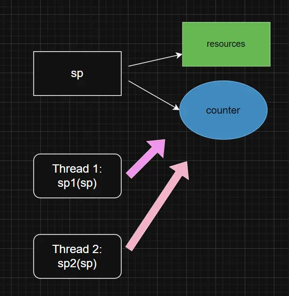
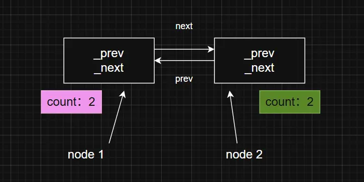
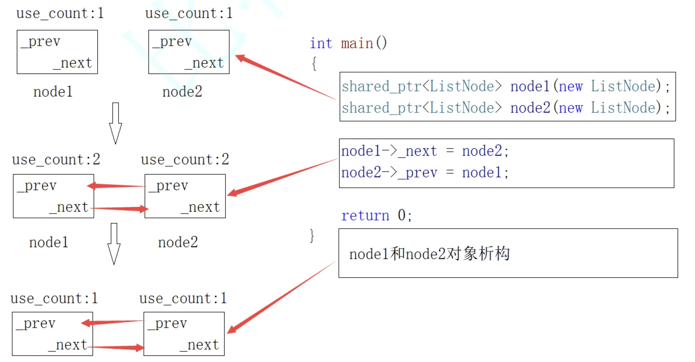

Table of Contents
- Why Do We Need Smart Pointers?
- Fundamental Principles of Smart Pointers
- Using Smart Pointers Effectively
- Evolution of Smart Pointers in C++
- Custom Deleters
- Supplement 1: RAII in Practice – Lock Guards
- Supplement 2: Understanding Memory Leaks
Reference Resource: BiteTech C++ Course
Why Do We Need Smart Pointers?
Let’s start with an example:
|
|
Since the div function may throw an exception, the normal execution flow of the program can be interrupted. As a result, div might not complete, and the pointer p won’t be released. Typically, exceptions are caught at the outermost level, but in this case—without using smart pointers—you would have to add another try-catch block inside func to ensure that p gets properly deleted and memory isn’t leaked.
|
|
When working with code that involves multiple raw pointers, preventing memory leaks often requires adding nested layers of exception-handling logic. To address this complexity in a cleaner and more elegant way, seasoned developers came up with a better solution: smart pointers.
Fundamental Principles of Smart Pointers
The implementation principle of smart pointers is quite straightforward: store the raw pointer in the constructor, and release it in the destructor.
|
|
So, the messy and exception-sensitive code above can be simplified by using smart pointers:
|
|
Regardless of whether an exception is thrown, the pointer p will be properly released. This is because the SmartPtr object’s lifecycle ensures that the resource is cleaned up even if the function exits prematurely due to an exception. In short, SmartPtr takes care of resource management for us. Whether the function completes normally or is interrupted by an exception, the sp object will go out of scope, triggering its destructor and releasing the memory held by p. Essentially, we are delegating resource ownership to the smart pointer, which stores the resource in its constructor and releases it in its destructor.
RAII
RAII (Resource Acquisition Is Initialization) is a technique that uses object lifetimes to manage program resources such as memory, file handles, network connections, mutexes, and more.
In other words, a resource is acquired during object construction, remains valid throughout the object’s lifetime, and is released when the object is destroyed. This approach effectively delegates resource management to an object.
RAII offers two major benefits:
- No need to manually release resources
- Resources remain valid throughout the object’s lifetime
This technique indirectly addresses the lack of a garbage collection mechanism in C++.
- RAII is a resource management paradigm. In addition to smart pointers, constructs like
unique_lockandlock_guardare also built upon this idea.- Smart pointers are designed as RAII-based classes.
Using Smart Pointers Effectively
The SmartPtr implementation above can’t yet be considered a true smart pointer, because it doesn’t behave like a regular pointer. To make it functionally complete, we need to add some code that enables standard pointer operations.
|
|
Potential Pitfalls of Smart Pointers
Let’s start with an example:
|
|
Here, both sp1 and sp2 point to the same memory location. When the program exits, both objects invoke their destructors, resulting in the same resource being deleted twice—a classic case of double deletion.
To address this issue, smart pointers evolved into three distinct strategies:
- Ownership transfer:
auto_ptr - Copy prevention:
unique_ptr - Shared ownership via reference counting:
shared_ptr- Which can lead to circular references, resolved by introducing
weak_ptr
- Which can lead to circular references, resolved by introducing
auto_ptr
Overall, auto_ptr is considered a flawed design. It breaks the intuitive behavior of pointers, and many companies explicitly forbid its use.
How auto_ptr Works
|
|
It may cause a null pointer error:
|
|
unique_ptr
A straightforward and aggressive solution is to simply prevent copying. This is the recommended approach, but it becomes unusable in scenarios where copying is actually required.
How unique_ptr Works
|
|
shared_ptr
Shared ownership among multiple shared_ptr instances is achieved through reference counting.
How shared_ptr Works
Four key points:
- Internally,
shared_ptrmaintains a reference count for each resource to track how many objects share it. - When a
shared_ptris destroyed (i.e., its destructor is called), it signals that the object no longer uses the resource, and the reference count is decremented by one. - If the reference count reaches zero, it means this was the last owner of the resource, and the resource must be released.
- If the reference count is not zero, it means other objects are still using the resource, so it must not be released—otherwise, they would be left with dangling pointers.
|
|
Thread Safety Issues with shared_ptr During Copy Assignment
Since the reference count is stored on the heap, problems can arise when two threads—say, t1 and t2—each hold a smart pointer and simultaneously perform copy assignment from the same shared_ptr instance sp. This can lead to both threads trying to increment or decrement the reference count at the same time, resulting in incorrect behavior.
Here’s a simplified illustration of the issue:
We can examine the thread safety of shared_ptr from two perspectives:
- The reference count is shared among multiple
shared_ptrinstances. If two threads simultaneously increment or decrement the count (e.g.,++or--), these operations are not atomic. For example, if the count starts at 1 and both threads increment it, the result might still be 2—leading to inconsistencies. This can cause resources to be leaked or prematurely destroyed, resulting in crashes. Therefore, reference count operations must be synchronized. In other words,shared_ptrensures thread safety for reference counting. - The actual object managed by the smart pointer resides on the heap. If two threads access it concurrently, thread safety issues may arise depending on how the object itself is used.
Here’s the revised version of the code that addresses these concerns:
|
|
Smart pointer implementations in the C++ standard library are thread-safe by design.
Limitation of shared_ptr: Circular References
What Is a Circular Reference?
Let’s look at a typical scenario:
|
|

In this scenario, the following situation occurs:
node1andnode2are two smart pointer objects pointing to two separate nodes. Their reference counts are both 1, so there’s no need to manually calldelete.node1’s_nextpoints tonode2, andnode2’s_prevpoints back tonode1. As a result, both reference counts become 2.- When
node1andnode2are destroyed, their reference counts drop to 1. However,node1still holds_next, which points tonode2, andnode2still holds_prev, which points tonode1. In theory, if_nextwere destroyed,node2would be released; if_prevwere destroyed,node1would be released. - But
_nextis a member ofnode1, andnode1is managed bynode2’s_prev._previs a member ofnode2, which is managed bynode1’s_next. This creates a circular reference, where each object indirectly keeps the other alive. As a result, neither object is ever released.
This is essentially a “chicken-and-egg” problem in memory management.
How to Solve It: weak_ptr
Strictly speaking, weak_ptr is not a smart pointer in the traditional sense, because it doesn’t follow the RAII (Resource Acquisition Is Initialization) principle. It behaves like a pointer, but it doesn’t manage or release resources. Instead, it was specifically designed to break circular references caused by shared_ptr.
Based on the earlier implementation of shared_ptr, a simplified version of weak_ptr might look like this (the actual implementation in the C++ standard library is much more complex):
|
|
So, in the previous example, we can refactor the code to use weak_ptr. This way, when we assign node1->_next = node2; and node2->_prev = node1;, the _next and _prev members—now implemented as weak_ptr—won’t increase the reference counts of node1 and node2. As a result, we avoid the circular reference problem entirely.
|
|
Evolution of Smart Pointers in C++
C++ does not have a built-in garbage collection (GC) mechanism. This means that manually releasing allocated resources is a persistent challenge—especially when dealing with exception safety. A small oversight can easily lead to memory leaks. Such leaks gradually consume available memory, and since many operations in a program depend on memory, it’s crucial to avoid them as much as possible.
To address this, smart pointers were introduced based on the RAII (Resource Acquisition Is Initialization) principle.
Phase One:
C++98 introduced auto_ptr for the first time. However, its design had serious flaws and is no longer recommended for use.
Phase Two:
For the next decade, the C++ standard made little progress in this area. In response, a group of experts created an unofficial community project known as Boost, which included a wide range of utilities. Within Boost, they redesigned smart pointers:
scoped_ptr/scoped_array(non-copyable versions)shared_ptr/shared_array(reference-counted versions)weak_ptr(designed to solve circular reference issues)
scoped_ptris intended for managing single objects allocated withnew, and releases them usingdeletein its destructor.scoped_arrayis for managing arrays allocated withnew[], and releases them usingdelete[]. It also overloads theoperator[]for array access.
Phase Three:
C++11 officially introduced smart pointers into the standard library, drawing inspiration from Boost’s implementation with some refinements. Features like rvalue references and move semantics in C++11 were also heavily influenced by Boost.
Custom Deleters
The official C++ standard library did not adopt the scoped_array and shared_array implementations from the Boost library. So how does it handle situations where multiple objects are allocated with new[]? We can solve this by writing a custom functor-based deleter.
|
|
Essentially, we pass a functor object to the smart pointer that defines how the resource should be released. Since the default deletion behavior in the C++ standard library’s smart pointers is delete for single objects, we can handle other cases—such as arrays or custom cleanup logic—by writing our own functor-based deleters.
Supplement 1: RAII in Practice – Lock Guards
Throwing exceptions can not only lead to memory leaks, but also cause deadlocks in certain scenarios. For example:
|
|
By applying the RAII principle, we can encapsulate the locking and unlocking logic within a class constructor and destructor. This effectively solves the problem mentioned above.
|
|
Apply the LockGuard class within the func function:
|
|
Supplement 2: Understanding Memory Leaks
What Is a Memory Leak?
A memory leak occurs when a program fails to release memory or resources that are no longer in use—often due to negligence, coding errors, or poor exception safety. It doesn’t mean the memory physically disappears; rather, the application allocates a block of memory but, due to flawed design, loses control over it, resulting in wasted memory.
If the process terminates normally, the operating system will reclaim the memory. So in many cases, restarting the program can temporarily resolve the issue.
Why Memory Leaks Are Harmful
Memory leaks can have serious consequences for long-running programs—such as operating systems or backend services that cannot be restarted casually. Over time, leaks cause available memory to shrink, leading to slower response times, system freezes, or failures in operations that require memory (e.g., storing data in containers, opening files, creating sockets, sending data).
How to Prevent Memory Leaks
- Be cautious when writing C/C++ code.
- Use smart pointers to manage resources in complex or error-prone areas (preventive strategy).
- If you suspect a memory leak, use diagnostic tools to detect and resolve it (reactive strategy).
- Recommended tool: Valgrind — a powerful memory analysis tool for Linux.